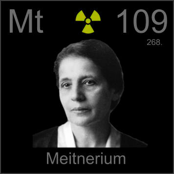

HOME
PREVIOUS
NEXT

Meitnerium
Atomic Weight: 278[note]
Density: N/A
Melting Point: N/A
Boiling Point: N/A
Lise Meitner did not share the Nobel Prize for atomic fission with Otto Hahn, as many thought she should have, but she did get the last laugh--her own element, a far less fleeting honor than a mere Nobel.